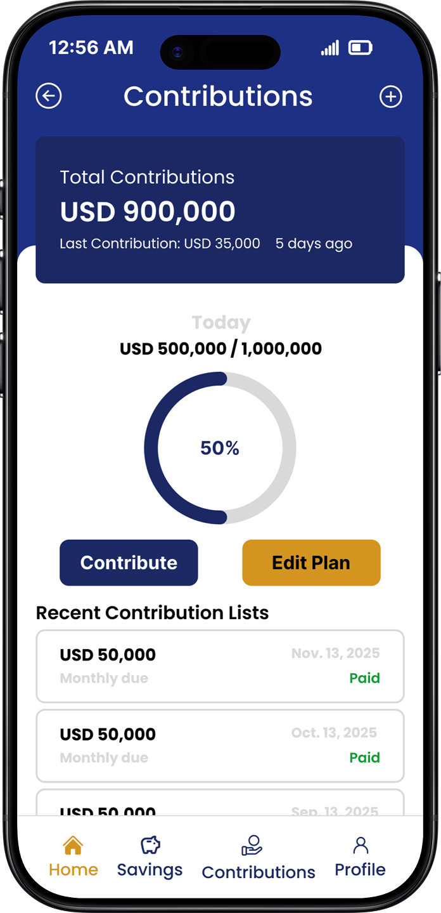
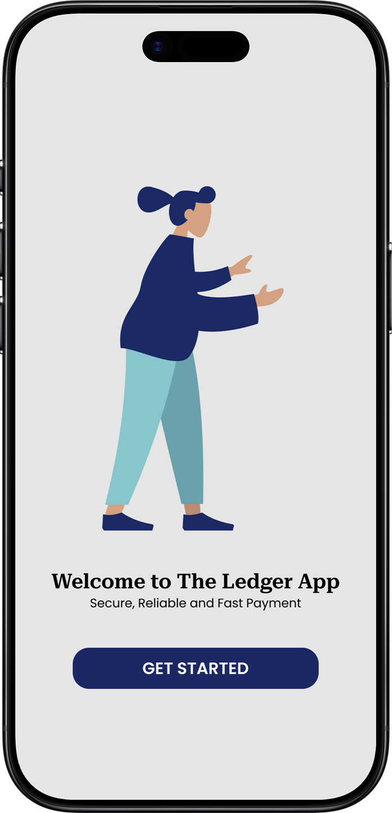

UI/UX DESIGN · FINANCE · MOBILE APP
Contribution App
A structured mobile contribution experience designed to make saving, tracking financial commitments and monitoring progress easier and more organized.

PROJECT OVERVIEW
Creating clarity around shared contributions.
The Challenge
Managing contributions can become difficult when users do not have a clear view of their commitments, progress and financial activity.
The Goal
The goal was to create an intuitive experience where users can easily understand their contribution activity and stay informed about their progress.
DESIGN APPROACH
Turning financial activity into a clear experience.
Understand
Identify the important information users need when managing their contributions.
Structure
Organize financial information into clear sections and understandable interactions.
Design
Create a clean interface that makes contribution activity easy to understand.
Refine
Refine the interface to create consistency across the financial experience.
THE DESIGN
A focused contribution experience.



KEY EXPERIENCE
Designed to keep financial activity clear.
Contribution Tracking
Users can keep track of their contribution activity through a structured financial interface.
Progress Visibility
Clear information helps users understand their progress and financial commitments.
Simple Navigation
Important actions and information are organized to reduce unnecessary complexity.
Consistent Experience
The visual system maintains consistency across the wider savings experience.
TOOLS & SKILLS
Designed with purpose.
FINAL THOUGHT